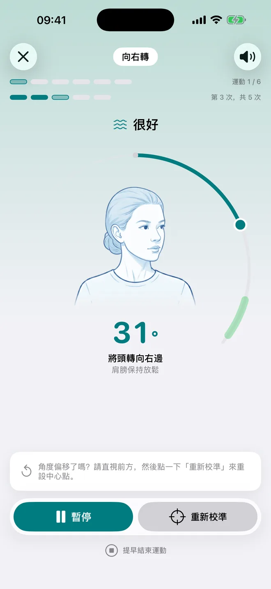
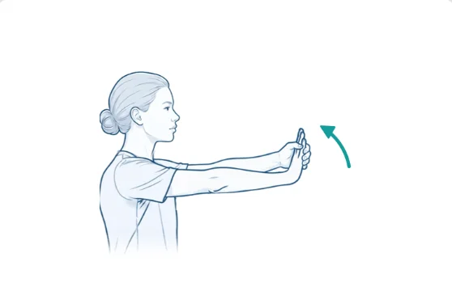
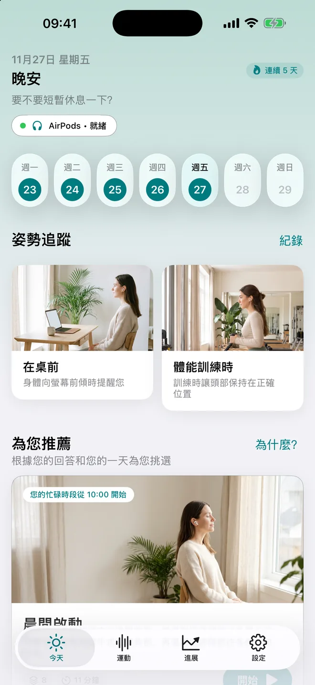
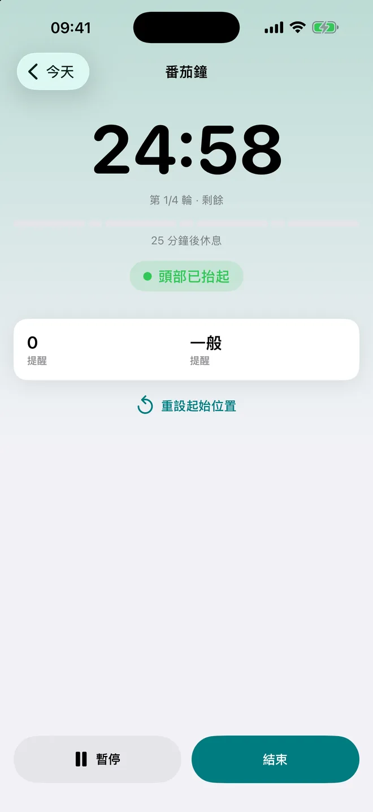

頸部
左右轉頭、左右側傾、低頭與抬頭、收下巴。AirPods 會測量角度並計算次數；不使用 AirPods 時，Nodly 會以計時器引導節奏。
適合頸部、呼吸、眼睛、手部和腿部的簡短運動，還有桌前瑜伽。搭配 AirPods，Nodly 會測量您的頸部動作、追蹤您的姿勢，並在您低頭太久時提醒您。
從 App Store 下載適用於 iPhone 和 iPad · 可搭配相容的 AirPods，也可不使用

不只是頸部
左右轉頭、左右側傾、低頭與抬頭、收下巴。AirPods 會測量角度並計算次數；不使用 AirPods 時，Nodly 會以計時器引導節奏。

長吐氣、方塊呼吸和均衡呼吸，可選 1、2 或 3 分鐘，以圖示和輕微震動引導節奏。

離開螢幕的兩分鐘休息：望向遠方、緩慢眨眼，再閉上眼睛休息。

手腕伸展、轉手腕，以及握拳與張手，適合整天使用鍵盤和滑鼠的日子。

提踵、勾腳尖、伸膝和坐姿踏步，不必離開座位。

坐姿貓牛式、側彎和扭轉，加上肩部動作，在會議之間放鬆一下。
只有頸部追蹤會使用 AirPods，其他運動都不需要。
以 AirPods 測量
耳機中的動作感測器會追蹤您的頭部角度。當您到達目標範圍時，Nodly 會以提示音和輕微震動告知，並為您計算次數。目標會依您自己的活動範圍調整。
Nodly 使用耳機中的動作感測器。不需要相機，也不需要其他裝置。
直視前方並保持不動幾秒鐘。Nodly 會將此位置設為 0°。
當您到達目標範圍時，Nodly 會以提示音和輕微震動告知，並為您計算次數。
0°
右
向右拖移到綠色範圍，再回到中間。
次數: 0


姿勢追蹤
在您工作時追蹤頭部，時間從 30 分鐘到 2 小時，也可使用番茄鐘：工作 25 分鐘、休息 5 分鐘為一輪。
進行站姿運動時，頭部一往下垂，Nodly 幾秒內就會提醒您。進行躺姿運動時，只要暫停即可。
鎖定手機後繼續工作。剩餘時間會顯示在鎖定畫面上，您也可以從那裡暫停或結束。
使用 Siri、從控制中心，或在「捷徑」中搭配專注模式自動化操作。
「用 Nodly 開始姿勢追蹤」
課表
從「晨間啟動」或「螢幕休息」等現成課表開始，或從運動庫中挑選動作，依您的順序排列。「今天」畫面上的「為您推薦」會依您的一天和最忙碌的時段，推薦適合的課表。
進展
您的連續紀錄、本週狀況，以及花在頸部、呼吸、眼睛、手部和腿部的時間分配，一目瞭然。隨著您持續運動，一張小小的 3D 書桌也會漸漸變整齊。
細節
您的紀錄和課表會透過您自己的 iCloud，在 iPhone 和 iPad 之間同步。
頸部運動可以依計時器進行，其他運動則完全不需要 AirPods。
每日提醒、忙碌時段中的桌前休息，以及每週摘要，每一項都可自由選擇。
語音提示、聲音和觸覺回饋會引導您，讓您的視線可以離開螢幕。
支援動態字體、VoiceOver 和減少動態效果，適用於 iPhone 和 iPad。
繁體中文、簡體中文、英文、土耳其文、德文、西班牙文、法文、義大利文、葡萄牙文、荷蘭文、俄文、日文和韓文。
隱私與信任
動作資料會在您的手機上處理，原始動作資料絕不會儲存。無需帳號。
動作應該緩慢而舒適。如果感到不對勁，請立即停止。Nodly 從不勉強您。
Nodly 是一款健康生活 App，不會診斷或治療任何疾病。如果您的頸部有狀況，請在開始前先諮詢醫療專業人員。